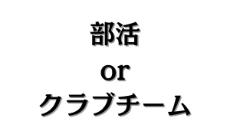
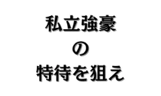
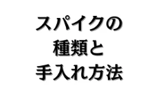
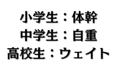
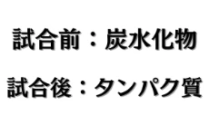
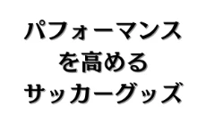
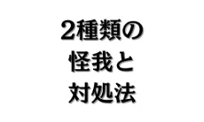

役立つコラム
役立つコラム
 最新サッカーニュース
最新サッカーニュース
最新サッカーニュース


 選手向けコラム
選手向けコラム
選手向けコラム

中学生向け、クラブチームor部活どっちに行くべき？

高校生向け、推薦や特待について徹底解説。

HG、AG、FGの違いは何？

小学生は筋トレをしてはいけないの？
 保護者向けコラム
保護者向けコラム
保護者向けコラム

サッカー選手を目指す子どもの食事を徹底解説！

チューブ、ヨガマット、高機能ソックス、ヴェポラップを徹底解説！

クラブは部活より5.68倍費用がかかる！

外傷と障害の違いから応急処置まで徹底解説！
 指導者向けコラム
指導者向けコラム
指導者向けコラム
 チーム練習一覧
チーム練習一覧
 攻撃戦術
攻撃戦術
攻撃戦術
 フィニッシュ
フィニッシュ
 ビルドアップ
ビルドアップ

 ブロック
ブロック
 プレス
プレス
 個人練習一覧
個人練習一覧
 FW
FW
 MF
MF
 DF
DF
 GK
GK
その他
 筋トレ
筋トレ
 体幹トレーニング
体幹トレーニング
 ウォーミングアップ
ウォーミングアップ
 アジリティ
アジリティ
 動体視力
動体視力
 コンディション
コンディション
 食事
食事
 ストレッチ
ストレッチ
 チューブ
チューブ
 戦術理解
戦術理解
- プレーモデルとは（岡田メソッド）
- 共通原則：「4つの局面」とプレーの目的（岡田メソッド）
- 共通原則：4段階の攻撃（岡田メソッド）
- 共通原則：4段階の守備（岡田メソッド）
- 攻撃の一般原則：攻撃の優先順位（岡田メソッド）
- 攻撃の一般原則：ポジショニング（岡田メソッド）
- 攻撃の一般原則：モビリティ（岡田メソッド）
- 攻撃の一般原則：ボールの循環（岡田メソッド）
- 攻撃の一般原則：個の優位性（岡田メソッド）
- 守備の一般原則：守備の優先順位（岡田メソッド）
- 守備の一般原則：ポジショニング（岡田メソッド）
- 守備の一般原則：バランス（岡田メソッド）
- 守備の一般原則：プレッシング（岡田メソッド）
- 守備の一般原則：個の優位性（岡田メソッド）
- 個人とグループの原則〈攻撃〉：認知（岡田メソッド）
- 個人とグループの原則〈攻撃〉：パスと動きの優先順位（岡田メソッド）
- 個人とグループの原則〈攻撃〉：ポジショニング（岡田メソッド）
- 個人とグループの原則〈攻撃〉：サポート（岡田メソッド）
- 個人とグループの原則〈攻撃〉：パッサーとレシーバー（岡田メソッド）
- 個人とグループの原則〈攻撃〉：マークを外す（岡田メソッド）
- 個人とグループの原則〈攻撃〉：ドリブル（岡田メソッド）
- 個人とグループの原則〈攻撃〉：シュート（岡田メソッド）
- 個人とグループの原則〈守備〉：認知（岡田メソッド）